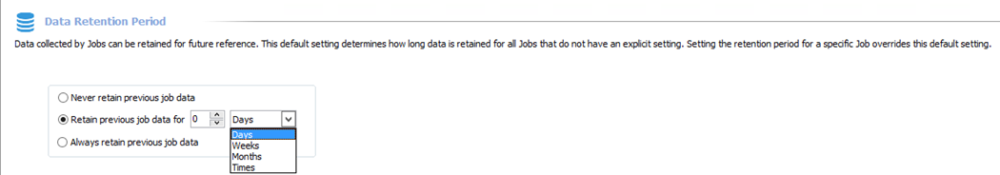
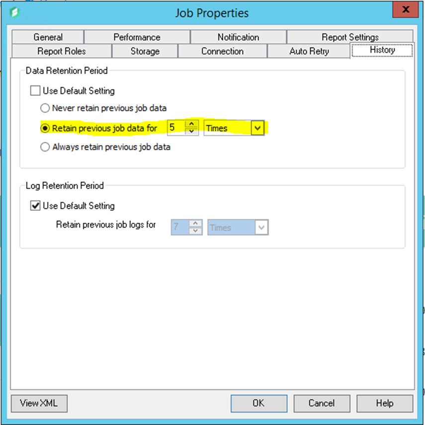

Summary:
StealthAUDIT History Retention is enabled by default in the File System solution set but no other solution sets or collection jobs. This is due to the way the solution sets write their collected data back to the StealthAUDIT database.
Submitted by:
Kevin Joyce
Product(s):
StealthAUDIT
Affected Versions:
N/A
Affected Module:
SA - Solution Set - ADInventory
SA - Solution Set - File System
SA - Solution Set - SharePoint
Dev Ticket:
N/A
Resolved in Version:
N/A
Issue:
At the global level, StealthAUDIT History retention is disabled and should not be enabled in almost all implementations. Individual solution sets or custom solutions can have their history enabled at the solution level; however, you must understand how StealthAUDIT History works to understand if you can or should enable it. History works by retaining data within data collector result tables based on its configuration. Most solution sets, besides a few, rely on the data collector results table to do their analysis and reporting. Preserving more than just the most recent set of data in these tables can result in inflated or duplicated data in reports.

History can be enabled to preserve data for a specific time period or set number of times the job runs.
For example, StealthAUDIT History Retention is enabled by default in the File System solution set, this is because the collection jobs in the solution set write to a managed schema (e.g., SA_FSAA_* tables) as well as the data collector results table (e.g., SA_1-FSAA_System_Scans_Access).

History can be enabled for the collection jobs in this solution set because the out of the box reporting within the File System solution leverages the managed schema tables and not the data collector results table. History is enabled here so you can identify how the job has performed over the last 5 runs, as the data collector results table contains summarized information around runtime, types and amount of data collected, etc. Being able to report and analyze on trends of your collection jobs is possible through StealthAUDIT History.
Two other solution sets that can support history at the collection level are .Active Directory Inventory and SharePoint. That is because these two solution sets also write to a managed schema, (e.g., SA_ADInventory_* and SA_SPAA_*) which the out of the box reports rely on.
Two examples of solution sets that should never have their history enabled would be the Active Directory Permissions Analyzer and Windows solutions. These solutions leverage data collectors that write their collected data directly to the data collector results tables. If you were to enable history, the out of the box reports would contain duplicated data.